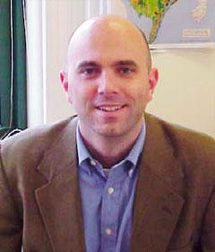

Task Leaders: Nathanael Greene
Nathanael Greene received his Bachelor of Arts Degree in Public Policy from Brown University and a Master of Science Degree in Energy and Resources from University of California Berkeley. He joined NRDC in 1992 and worked two years before getting his master's degree and returned to NRDC in 1996 and working there since. He is a senior policy analyst and is responsible for working on energy policy and related issues including utility restructuring, energy taxes, energy efficiency, renewables, and low-income services. He has particular expertise in clean energy technologies including wind, solar and biomass energy, fuel cells, combined heat and power and energy efficiency and in regulations and policies to promote these technologies.